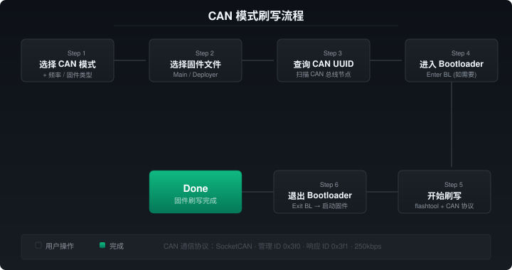

CAN 模式刷写
CAN 模式通过 SocketCAN 与设备通信，适用于使用 CAN 总线连接的 IDM 传感器。
CAN 频率选择
根据固件编译时使用的 CAN 频率，从下拉框选择：
| 选项 | 频率 | 说明 |
|---|---|---|
| 1000000 | 1M | 高速 |
| 500000 | 500k | 中速 |
| 250000 | 250k | 低速 |
| 其他 | - | 不含频率标记的固件 |
固件类型
- IDM 主固件 (main)：传感器正常运行固件
- Bootloader 覆盖固件 (deployer)：首次部署时刷入，替换已有 bootloader
CAN UUID
Flash 需要设备的 6 字节 UUID。点击「查询」按钮自动扫描 CAN 总线上的 Katapult 节点。
前置条件：
- 设备处于 Katapult bootloader 模式
- CAN 接口已配置并启用（如
can0）
进出 Bootloader
- Enter BL：通过 CAN 发送 KLIPPER_REBOOT_CMD 到管理 ID 0x3f0
- Exit BL：发送清除节点→设置节点ID→CONNECT→COMPLETE 序列

刷写流程
- 选择 CAN 模式
- 选择频率和固件类型
- 选择固件版本和文件
- 点击「查询」获取 CAN UUID
- 必要时点击「Enter BL」
- 点击「开始刷写」
- 观察控制台输出，等待完成